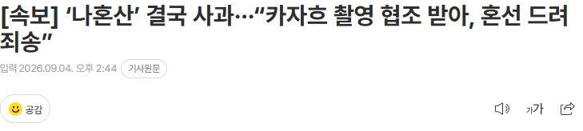
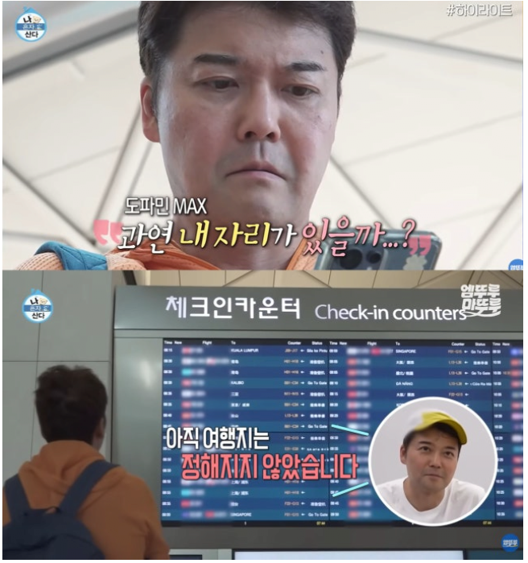
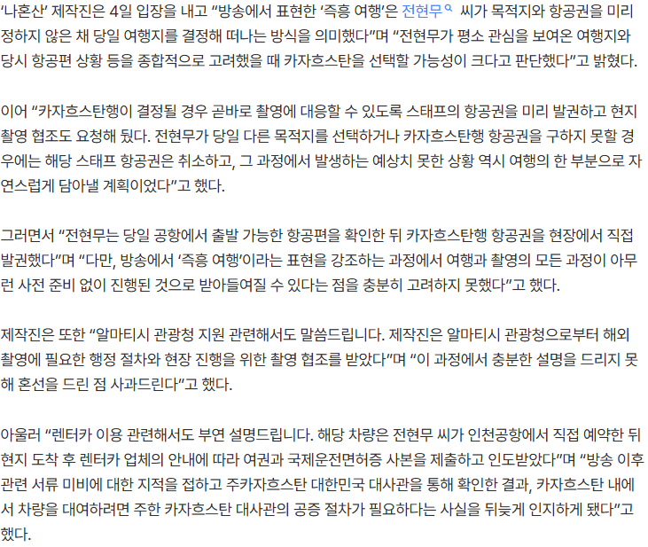

[속보] 전현무 ‘즉흥여행’이라더니···‘나혼산’ 스태프 항공권 미리 구매 인정
ㅋㅋㅋㅋㅋㅋㅋㅋㅋㅋㅋㅋㅋㅋㅋㅋㅋㅋㅋㅋㅋㅋㅋㅋㅋㅋㅋㅋㅋㅋㅋㅋㅋ



[속보] 전현무 ‘즉흥여행’이라더니···‘나혼산’ 스태프 항공권 미리 구매 인정
ㅋㅋㅋㅋㅋㅋㅋㅋㅋㅋㅋㅋㅋㅋㅋㅋㅋㅋㅋㅋㅋㅋㅋㅋㅋㅋㅋㅋㅋㅋㅋㅋㅋ
공익에 반하는 이상한 프로
방통위 개입하니까 개같이 실토하네 ㅋㅋ
MBC는 잘못을 인정하고 사과하면 죽는다고 믿는 교리 같은게 있는 집단이야??
저지른게 너무많아서 일일히 사과하면 답도없음
궁예가 살아돌아와도 그건 예측못하겠다 씨발 ㅋㅋ
ㅈㄴ추하다 진짜 ㅋㅋㅋㅋ
구라 안쳐도 그냥 볼텐데 왜 ㅋㅋㅋㅋ
아직도 이악물고 개뻥치고있네
기싸움 on
카자흐스탄 알마티시 촬영 협조는 전현무 선택 전에 받은 거네 굉장히 무례한 행위 아닌가? 아니면 알마티시 관광국에 출연협조 사실을 모르는 출연진의 공항 내 자체적이고 개인적인 여행지 선택에 따라 촬영 일정이 당일 취소 될 수 있다고 미리 이야기를 했나? 이것도 타국 공공기관을 상대로 상식적이지 않은 윗 계급 바이브라 이해가 좀 안되네.....
방송이니만큼 당연히 기획과 연출이 있겠지만,
나혼자산다는 그래도 나름 연예인들의 일상생활을 조명한다는 진정성을 일부 갖고가는 프로그램인데
이번 건으로 그 일말의 포장된 진정성 마저 훼손되었다고본다. 회복하려면 시간이 꽤 필요할듯
나 혼산은 도대체 뭐가 문제냐 ㅋㅋ 지금까지 티비 프로그램 주작 밝혀보면 ㅈㄴ 많을듯
역시 엠븅신이고 역시 나혼산이야 ㅋㅋㅋ
이번엔 전현무의 행동패턴까지 다 파악해놨던 엠비씨! 역시 10년가까이 동고동락하니 어딜 여행갈지 다 예상이 가능하다니! 난 내 와이프 어딜갈지 모르는데ㅎㅎ
전현무가 다른델 골라버리면 알마티 시에 전화해서 촬영 없던걸로 해버리기 ^^ 전화 한 통으로 알마티 당국을 들었다놨다하는 그 능력 대단하다!
와 사과조차 기싸움이넼ㅋㅋㅋㅋㅋㅋㅋ
지금까지 별 생각없이 구경중이었는데
이번 사과문은 진짜 어이가없네 ㅋㅋㅋㅋ
뒷광고원조집단이라 뭐
현무야 드가라 이제
방송은 역시 방방봐 ㅋㅋㅋ 작가진이 괜히 있겠어
기껏 생각해낸게 ㅋㅋㅋㅋㅋ 각본 누가썼냐...
준동하지마라 mbc가 그럴리 없다!!
ㅈ현무 이제 방송 나와서 깝치지말고 평생 어디 박혀서 살아라ㅋㅋ
나혼산을 할 게 아니라,
주가 예측을 했어야지 ㅋㅋㅋㅋㅋ 머하러 푼 돈 벌려고 욕먹고 있농
예측을 이렇게 잘하는데 ㅋㅋ
그냥 '즉흥'여행 컨셉 잡고 계획 짜는데 뜬금 카자흐스탄에서 오실? 연락을 받고 잘됬네 하고 카자흐 ㄱ 했다로 풀어도 충분한데